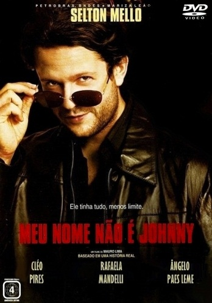
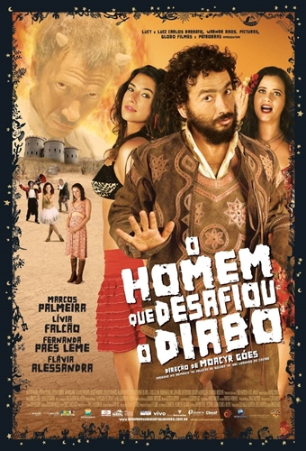
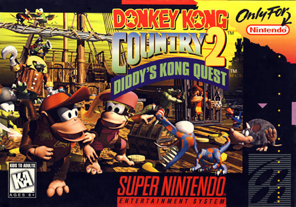
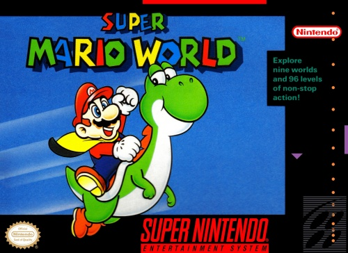

Filmes Brasileiros
O cinema nacional é rico em histórias, cultura e atuações memoráveis que marcam a nossa identidade.


Podcasts de Notícias
Para ficar por dentro de tudo o que acontece no mundo da política, economia e tecnologia diariamente.
Jogos de Super Nintendo
Uma viagem nostálgica aos anos 90 com os maiores clássicos de 16-bits que definiram gerações.

